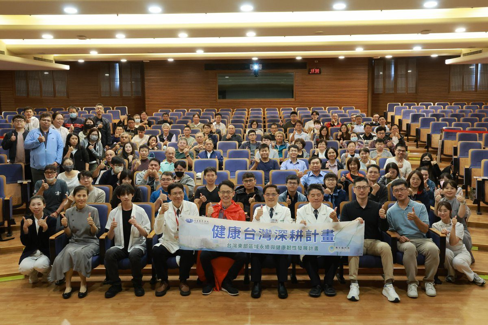

花蓮慈院攜職安署 強化東部職場呼吸危害防護

可樂電子報小編/編輯
職場中看不見的粉塵、有害氣體及化學物質，可能在長期暴露下對勞工健康造成傷害。11月4日，勞動部職業安全衛生署北區職業安全衛生中心與花蓮慈濟醫院、台灣明尼蘇達礦業製造股份有限公司（3M）共同舉辦「危害性化學品暴露危害評估暨呼吸防護研討會」，邀請專家從呼吸防護具實作、職業病預防到化學品管理法規，分享職場常見的呼吸危害與防護措施，希望提升東部地區職業安全衛生專業知能，守護勞工健康。

北區職業安全衛生中心職業衛生科科長游淳淼表示，職業安全衛生涉及許多專業知識，相關法規也持續更新，但過去呼吸防護具選用與密合度測試等實務課程多集中於西部，東部地區相對缺乏學習資源。因此，近年積極在東部辦理專業研習，這次分別於11月2日及4日在宜蘭、花蓮舉辦，兩場共計200人次參與，涵蓋醫療機構、製造業、公營事業及政府機關等不同領域，包括職業安全衛生管理人員、職業醫護人員及各類作業主管。游淳淼也感謝花蓮慈院長期提供場地、人力及志工協助，讓職業安全衛生教育訓練得以持續推動。

研習會首先由3M工業級安全產品事業部經理喬懷禹帶領「呼吸防護具暨密合度測試實作」，透過實際操作與案例分享，說明不同危害環境所需的防護裝備。喬懷禹指出，職場呼吸防護常見問題包括不了解工作環境中的危害、選錯防護具，以及因配戴不舒適而未確實使用。他說明，粉塵、油霧等粒狀污染物與有機溶劑、酸性氣體等氣狀污染物，必須依危害性質選擇合適的濾材或濾毒罐，不能認為只要戴上口罩就能獲得充分保護。

現場不少職安人員對呼吸防護具密合度測試相當關注，踴躍提問。喬懷禹也進一步說明，密合度測試可透過甜味劑或苦味劑，以及搭配深呼吸、轉頭及朗讀等動作，確認面罩是否確實貼合臉部，避免污染物從縫隙進入，影響防護效果。

花蓮慈院職業醫學科主任林純吉醫師則以「呼吸危害之風險評估與預防」為題，從臨床醫學角度說明長期吸入粉塵及有害物質對人體的影響。林純吉主任指出，部分職業性肺部疾病具有較長的潛伏期，勞工初期可能沒有明顯症狀，直到出現咳嗽、胸悶或呼吸困難時，肺部可能已受到難以逆轉的損傷。尤其從事營造、礦業、石材加工及其他粉塵暴露作業的勞工，更應重視工作環境中的呼吸危害。

林純吉醫師說，職業病預防不能只依賴個人防護具，應從危害辨識、暴露評估到風險控制建立完整防護措施，優先透過濕式作業、局部排氣等工程控制方式減少粉塵產生與擴散，再搭配適當的呼吸防護具及健康管理，降低勞工暴露風險。
除了實務防護，研習會也安排化學品暴露評估及管理法規課程。游淳淼科長分享作業環境監測與呼吸防護計畫相關規範，強調事業單位應掌握工作場所的化學品種類、危害特性與暴露情形，作為選擇防護措施的重要依據。北區職業安全衛生中心張崧慶檢查員則透過實際職災案例，提醒事業單位落實化學品標示、安全資料表管理及教育訓練，尤其進入儲槽、船艙等局限空間前，必須確認通風及氧氣、有害氣體濃度等安全條件，避免因缺氧或有害氣體暴露造成傷亡。
花蓮慈院也特別安排溫馨的感恩活動，向即將調任的游淳淼科長表達祝福。林欣榮院長與職業醫學科團隊準備象徵守護勞工安全的超人披風、環保寶劍及感恩紀念牌，感謝游淳淼科長多年來積極將職業安全衛生資源帶進宜蘭、花蓮及臺東，協助提升東部地區職場安全與勞工健康照護。林欣榮院長表示，感恩游科長長期為花東勞工付出，也祝福他未來持續發揮專業，將守護職場健康的精神傳承下去。